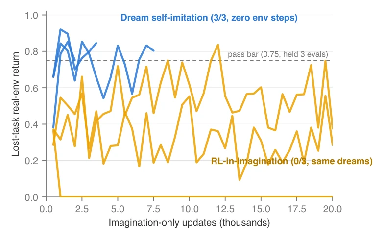
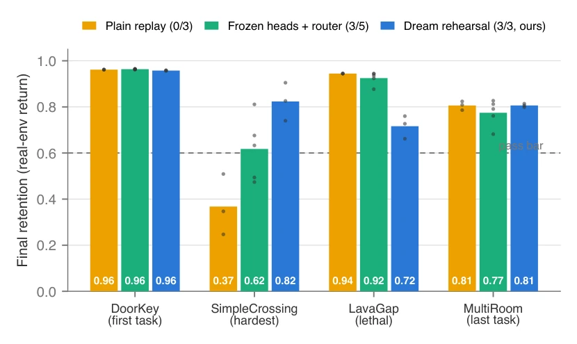

This paper is like conducting a health checkup for the RL community, finding that the patient's brain (World Model) is not broken, but the neural transmission (Actor) is severed. The authors use the "channel problem" to substitute the "memory problem" to explain catastrophic forgetting, a rather sharp viewpoint. The Dream Rehearsal scheme replaces policy gradients with supervised imitation, showing significant effects on MiniGrid, but limiting the scope to a small model with 17M parameters and 3 seeds carries a bit of a "laboratory refinement" feel. However, it indeed points out the blind spot of existing Replay methods—protecting the world model is useless; one must teach the actor how to read dreams. Especially that "Realized-First Grading" rule solves the pitfall of scoring failure for imagined trajectories; although computational overhead increased by 15%, it brings about full pass on the 8-task chain.
Existing Replay-based Continual MBRL methods (e.g., [1], [2], [3]) assume that preserving world model accuracy maintains policy performance. However, the authors found that under the DreamerV3 architecture, even if the Replay Buffer does not delete data, Actor behavior still collapses, while the WM's reward discrimination, value estimation, and termination structure remain almost undamaged. This reveals an unmeasured hypothesis in existing literature: forgetting occurs in the policy update channel rather than representation storage. Pure Replay cannot resolve the instability of policy gradients, leading to the loss of skills from old tasks, urgently requiring a mechanism that utilizes WM memory without relying on environment interaction. This directly challenges the implicit premises of WMAR [2] and ARROW [3], pointing out that protecting the WM is a false premise.
The overall process is: after training a new task, utilize states from the old task buffer to perform imagination on the frozen WM. The core innovation is "Graded Dream Rehearsal". First, the "Realized-First Grading" rule is proposed to solve the problem of scoring failure for imagined trajectories (such as noise after termination, commitment over realization). Specifically, the scoring formula introduces termination probability weights, ensuring that only trajectories that actually receive rewards are prioritized for cloning, avoiding interference from optimistic bias in value prediction. Second, Behavior Cloning is performed on the top 25% of imagined trajectories with the highest scores, replacing the original policy gradient update. Throughout the process, no task labels are required, no parameters are added, only about 15% computational overhead is increased. This method treats the WM as behavior memory, stably reading skills through a supervised channel; experiments show this supervised channel is more stable than the policy gradient channel and can prevent behavior collapse in co-trained tasks.

Figure 1: The recovery race. Real-environment return on the forgotten task during imagination-only re-teaching; three seeds per arm, identical frozen world model and imagined data. Supervised self-imitation on graded dreams (blue) clears the 0.75 recovery bar on 3/3 seeds within 2,000–7,500 updates; RL-in-imagination (orange) thrashes for 20,000 updates and passes 0/3, with one seed collapsing to zero. Returns are raw environment return in [0, 1]; both arms use the same frozen world model and identical imagined data, so the failure of the orange arm is attributable to the RL channel alone.
Experiments were conducted on MiniGrid with 4-task and 8-task chains, including mixed difficulty tasks such as DoorKey. Baselines include Plain Replay, Isolation Reference (frozen head + router), and Real-episode Cloning. The metric is the task final retention rate (Return > 0.6). Results show that Plain Replay passed 0/3 on the 4-task chain, while Dream Rehearsal passed 3/3, and outperformed Cloning (+0.13 difference). Ablation experiments prove the scoring rule is crucial; after the fix, stability for short-cycle tasks significantly improved. The 8-task chain also passed all, verifying the scalability of the mechanism.

Figure 2: Final retention across the four-task chain, three methods, per-seed points over bar means, pass bar 0.6. Plain never-clear replay (orange) holds the easy tasks but collapses on the hardest (SimpleCrossing, 0.37) — 0/3 seeds pass all four. The frozen-heads+router isolation reference (green) passes 3/5. Dream rehearsal (blue) passes 3/3 with the hardest task at 0.82.